|
Kun Wang (王琨) I am currently a final-year Ph.D. candidate at the PCALab group, Nanjing University of Science and Technology, Nanjing, China. I am privileged to work under the supervision of Prof. Jian Yang and co-supervision of Prof. Jun Li. I warmly welcome opportunities for discussion and collaboration—please feel free to reach out 😄. |
ResearchMy research interests encompass computer vision and machine learning, with a focus on 3D-related tasks including depth estimation, depth completion, and reconstruction, etc. |
|
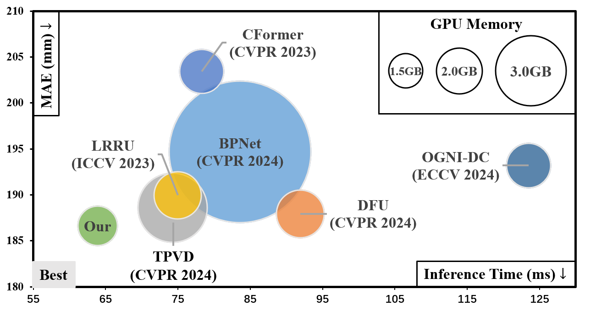
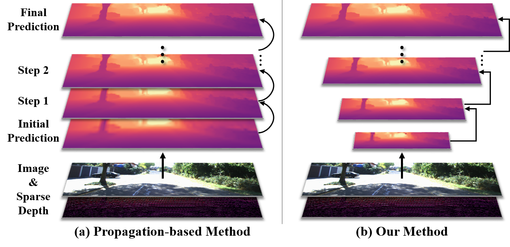
|
Learning Inverse Laplacian Pyramid for Progressive Depth Completion
Kun Wang, Zhiqiang Yan, Junkai Fan, Jun Li ✉, Jian Yang ✉ arXiv, 2025 / BibTeX LP-Net introduces an innovative multi-scale, progressive depth completion approach based on Laplacian Pyramid decomposition. It begins by establishing a global context of the scene structure, then progressively refines local details through a novel selective filtering mechanism at each scale. LP-Net achieves SOTA performance on both indoor and outdoor datasets, while maintains high computational efficiency. At the time of submission, it ranks 1st at KITTI online leaderboard among peer-reviewed methods. |
| 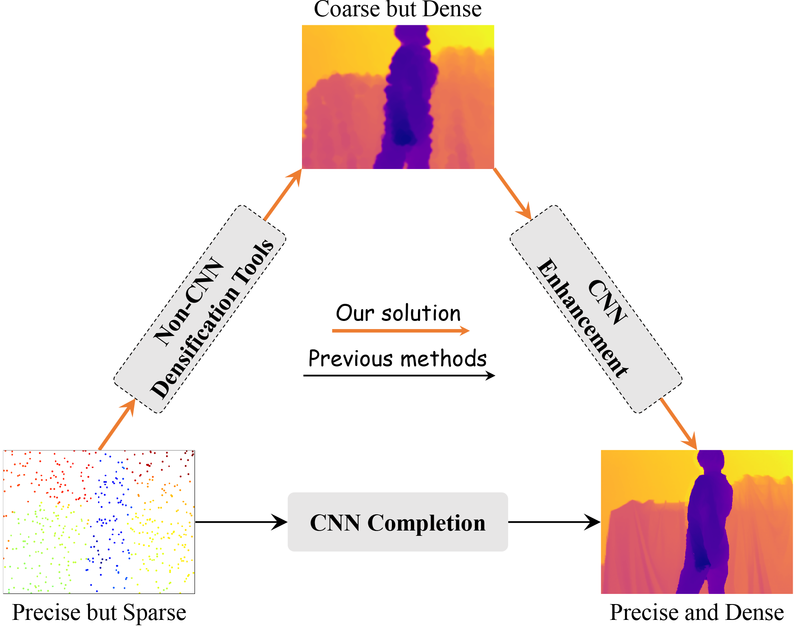 |
Completion as Enhancement: A Degradation-Aware Selective Image Guided Network for Depth Completion
Zhiqiang Yan, Zhengxue Wang, Kun Wang, Jun Li ✉, Jian Yang ✉ arXiv, 2024 / BibTeX We propose a novel degradation-aware framework SigNet that transforms depth completion into depth enhancement for the first time. SigNet eliminates the mismatch and ambiguity caused by direct convolution over irregularly sampled sparse data. Meanwhile, it builds a self-supervised degradation bridge between coarse depth and targeted dense depth for effective RGB-D fusion. |

|
DCL: Depth-Centric Dehazing and Depth-Estimation from Real-World Hazy Driving Video
Junkai Fan, Kun Wang, Zhiqiang Yan, Xiang Chen, Shangbin Gao, Jun Li ✉, Jian Yang ✉ AAAI, 2025 / Project Page / Github / Video / BibTeX We propose a novel depth-centric learning framework that combines the atmospheric scattering model(ASM) model with the brightness consistency constraint (BCC) constraint. The core idea is to use a shared depth estimation network for both ASM and BCC. |
|
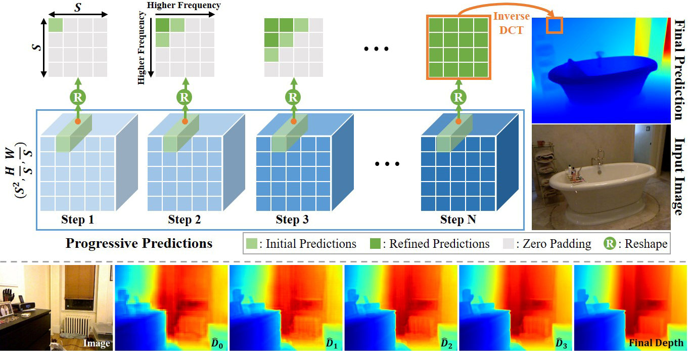
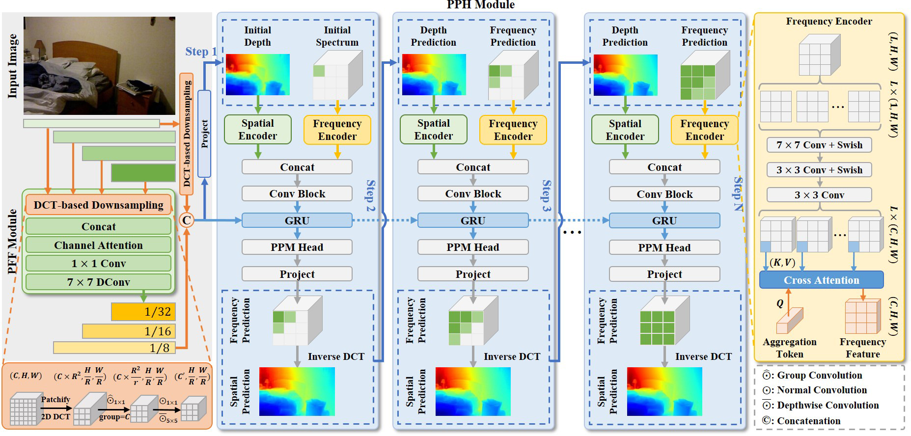
|
DCDepth: Progressive Monocular Depth Estimation in Discrete Cosine Domain
Kun Wang, Zhiqiang Yan, Junkai Fan, Wanlu Zhu, Xiang Li, Jun Li ✉, Jian Yang ✉ NeurIPS, 2024 / Github / Slides / Poster / BibTeX DCDepth redefines monocular depth estimation by moving it into the discrete cosine domain, where it models local correlations within depth patches. By exploiting frequency characteristics, DCDepth progressively estimates depth, starting with low-frequency components and then refining with high-frequency details, facilitating a global-to-local depth estimation approach. |
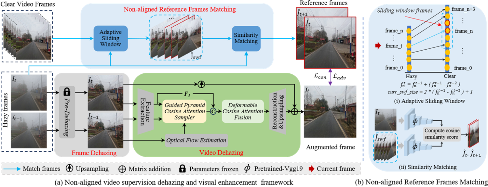

|
Driving-Video Dehazing with Non-Aligned Regularization for Safety Assistance
Junkai Fan, Jiangwei Weng, Kun Wang, Yijun Yang, Jianjun Qian, Jun Li ✉, Jian Yang ✉ CVPR, 2024 / Project Page / Github / Video / BibTeX We present an innovative video dehazing framework for real-world driving scenarios, addressing temporal and spatial misalignment challenges with non-aligned hazy/clear video pairs and a reference frame matching module. |
| 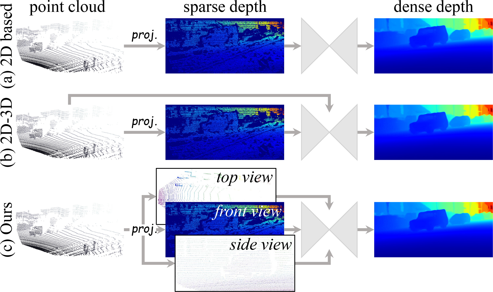 |
Tri-Perspective View Decomposition for Geometry-Aware Depth Completion
Zhiqiang Yan, Yuankai Lin, Kun Wang, Yupeng Zheng, Yufei Wang, Zhenyu Zhang, Jun Li ✉, Jian Yang ✉ CVPR, 2024, oral / Project Page / BibTeX TPVD decomposes 3D point cloud into three views to capture the fine-grained 3D geometry of scenes. TPV Fusion and GSPN modules are proposed to refine the depth. Furthermore, we build a novel depth completion dataset named TOFDC, acquired by a smartphone equipped with a time-of-flight (TOF) sensor. |
|
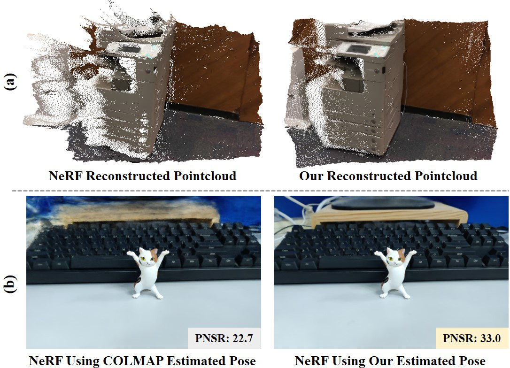

|
AltNeRF: Learning Robust Neural Radiance Field via Alternating Depth-Pose Optimization
Kun Wang, Zhiqiang Yan, Huang Tian, Zhenyu Zhang, Xiang Li, Jun Li ✉, Jian Yang ✉ AAAI, 2024 / BibTeX NeRF optimization frequently encounters local minima due to inaccurate camera poses and absent 3D supervision. AltNeRF employs an alternating optimization approach, starting with coarse depth and pose from a self-supervised estimator, to simultaneously refine camera pose, scene depth, and learn the NeRF representation, thereby substantially lowering the cost of high-quality NeRF creation. |
| 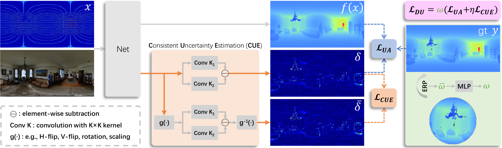 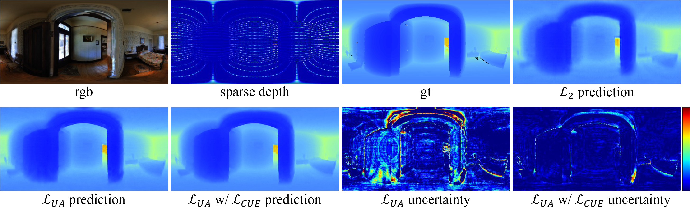 |
Distortion and Uncertainty Aware Loss for Panoramic Depth Completion
Zhiqiang Yan, Xiang Li, Kun Wang, Shuo Chen ✉, Jun Li ✉, Jian Yang ICML, 2023 / BibTeX Standard MSE or MAE loss function is commonly used in limited field-of-vision depth completion, treating each pixel equally under a basic assumption that all pixels have same contribution during optimization. However, the assumption is inapplicable to panoramic data due to its latitude-wise distortion and high uncertainty nearby textures and edges. To handle these challenges, this paper proposes the distortion and uncertainty aware loss (DUL) that consists of a distortion-aware loss and an uncertainty-aware loss. |
| 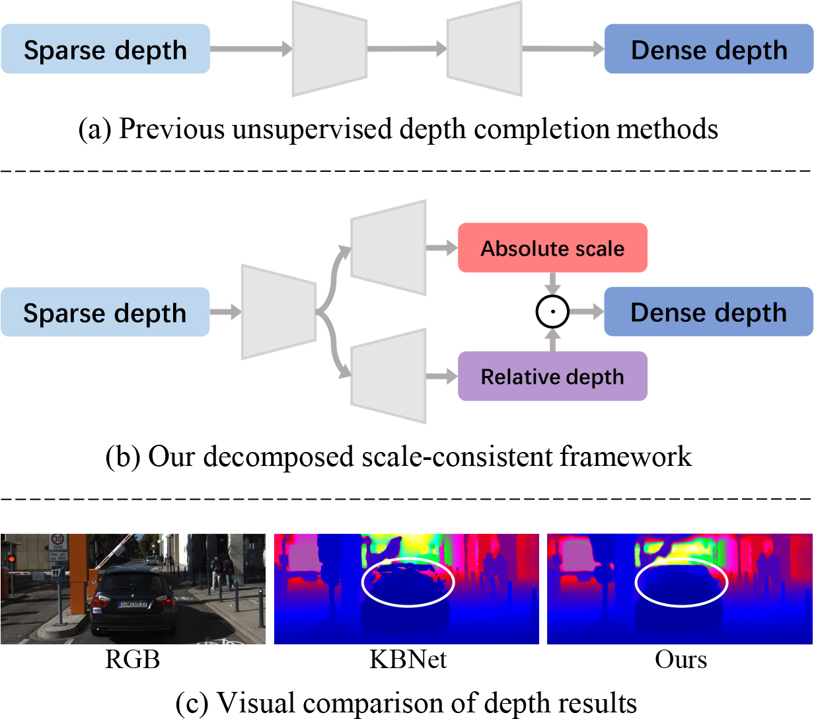 |
DesNet: Decomposed Scale-Consistent Network for Unsupervised Depth Completion
Zhiqiang Yan, Kun Wang, Xiang Li, Zhenyu Zhang, Jun Li ✉, Jian Yang ✉ AAAI, 2023, oral / BibTeX DesNet first introduces a decomposed scale-consistent learning strategy, which disintegrates the absolute depth into relative depth prediction and global scale estimation, contributing to individual learning benefits. Extensive experiments show the superiority of DesNet on KITTI benchmark, ranking 1st and surpassing the second best more than 12% in RMSE. |
| 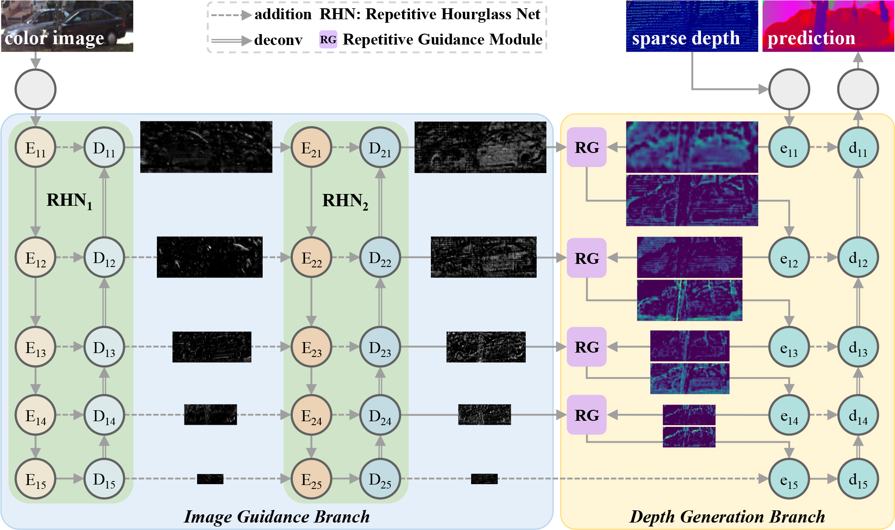 |
RigNet: Repetitive Image Guided Network for Depth Completion
Zhiqiang Yan, Kun Wang, Xiang Li, Zhenyu Zhang, Jun Li ✉, Jian Yang ✉ ECCV, 2022 / BibTeX RigNet explores a repetitive design for depth completion to tackle the blurry guidance in image and unclear structure in depth. Extensive experiments show that RigNet achieves superior or competitive results on KITTI benchmark and NYUv2 dataset. |
| 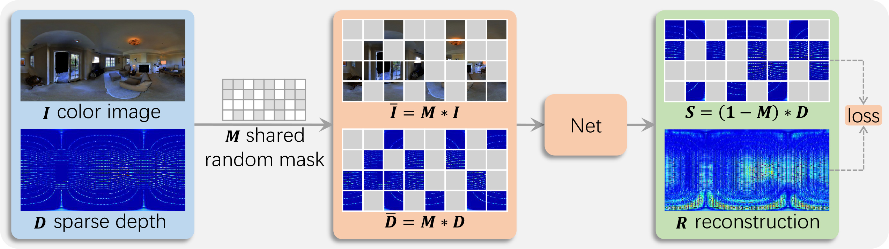 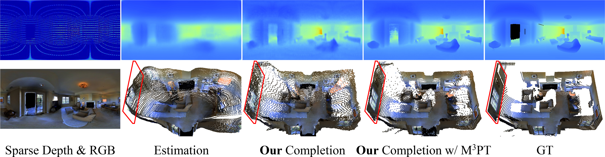 |
Multi-Modal Masked Pre-Training for Monocular Panoramic Depth Completion
Zhiqiang Yan, Xiang Li*, Kun Wang, Zhenyu Zhang, Jun Li ✉, Jian Yang ✉ ECCV, 2022 / BibTeX For the first time, we enable the masked pre-training in a Convolution-based multi-modal task, instead of the Transformer-based single-modal task. What's more, we introduce the panoramic depth completion, a new task that facilitates 3D reconstruction. |
| 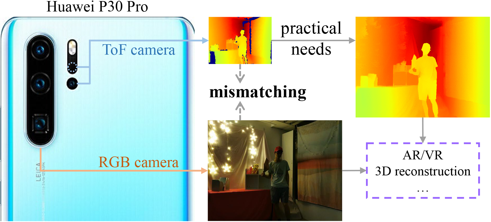 |
Learning Complementary Correlations for Depth Super-Resolution with Incomplete Data in Real World
Zhiqiang Yan, Kun Wang, Xiang Li, Zhenyu Zhang, Guangyu Li ✉, Jun Li ✉, Jian Yang TNNLS, 2022 / BibTeX Motivated by pratical applications, this paper introduces a new task, i.e., incomplete depth super-resolution (IDSR), which recovers dense and high-resolution depth from incomplete and low-resolution one. |
| 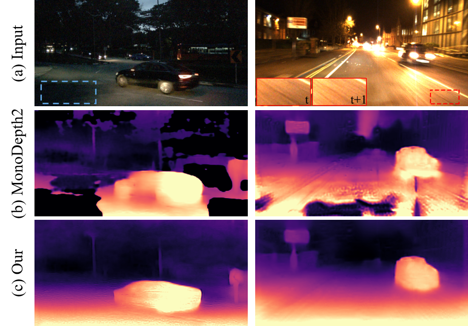 |
Regularizing Nighttime Weirdness: Efficient Self-supervised Monocular Depth Estimation in the Dark
Kun Wang*, Zhenyu Zhang*, Zhiqiang Yan, Xiang Li, Baobei Xu, Jun Li ✉, Jian Yang ✉ ICCV, 2021 / Github / BibTeX RNW first introduces a self-supervised monocular depth estimation framework that directly trained on the real-world nighttime images. It leverages distribution knowledge from unpaired depth maps to prevent incorrect model training, and further improves the prediction accuracy with brightness-consistent image enhancement and statistics-based pixel removel. |
{kind=link}
Academic Service
|
|
The website template is modified from Jon Barron's. Thanks to him! |